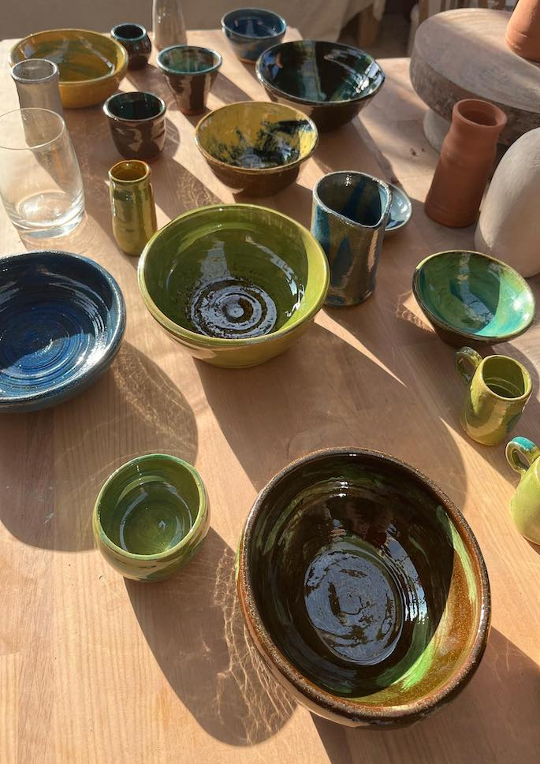

Plas Bodfa Projects

Mae hanes, storiau a gwaith celf cyfoes yn dwad at ei gilydd yn yr arddangosfa gynhwysfawr yma ym maenordy 100 mlwydd oed Plas Bodfa.
Dewch i ddarganfod 77 gwaith creadigol drwy ddulliau gweledol, clywedol, perfformiad a gosodiadau-safleoedd penodol.
History, storytelling and contemporary art collide in this fusion exhibition occupying the entirety of Plas Bodfa, a 100 yr-old manor house.
77 creatives explore the possibilities of time through visual, audio, performative & site-specific installations.
info@plasbodfa.com
www.plasbodfa.com
PLAS BODFA, LLANGOED, BEAUMARIS, LL58 8ND
O Fiwmares, cymerwch ffordd yr arfordir tua’r gogledd. Wrth gyrraedd Llangoed, chwiliwch am arwydd melyn a du Plas Bodfa. Trowch i’r chwith. Ewch heibio i’r ysgol gynradd. Dilynwch y ffordd am 3 munud. Mae Plas Bodfa ar y chwith.
From Beaumaris, take the coastal road North. Just on entering Llangoed, look for a yellow/black ‘Plas Bodfa’ sign. Turn left. Pass primary school. Follow road for 3 minutes. Plas Bodfa is on the left.
Siw Thomas

Dw i’n grochenydd sy’n gwneud potiau a phlatiau lliwgar i’w defnyddio ar bwrdd cinio.
Dw i’n mwynhau anwadalwch y broses danio, lle mae diffyg rheolaeth lawn o drawsnewidiad y clai a’r gwydreddau yn dod â bywiogrwydd i’r darn.
I’m a potter who makes colourful pots and plates to use at the dinner table.
I enjoy the unpredictability of the firing process, where the lack of complete control in the transformation of the clay and the glazes brings a liveliness to the piece.
07816 372801
siwthomas@hotmail.com
PLAS BODFA, LLANGOED, BEAUMARIS, LL58 8ND
O Fiwmares, cymerwch ffordd yr arfordir tua’r gogledd. Wrth gyrraedd Llangoed, chwiliwch am arwydd melyn a du Plas Bodfa. Trowch i’r chwith. Ewch heibio i’r ysgol gynradd. Dilynwch y ffordd am 3 munud. Mae Plas Bodfa ar y chwith.
From Beaumaris, take the coastal road North. Just on entering Llangoed, look for a yellow/black ‘Plas Bodfa’ sign. Turn left. Pass primary school. Follow road for 3 minutes. Plas Bodfa is on the left.